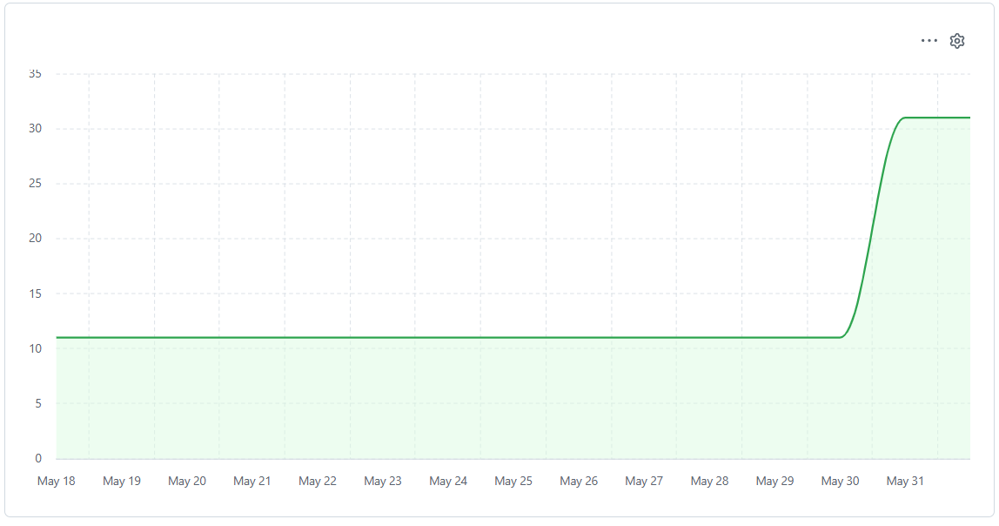

1. Información General del Proyecto
| Nombre del proyecto | Implementación de Scrum + DevOps aplicado a Medusa Commerce Platform |
|---|---|
| Software base | Medusa v2 — github.com/medusajs/medusa |
| Tipo de sistema | Plataforma de comercio electrónico headless (SCM/E-commerce) para PYMEs |
| Licencia | MIT License (verificada en el repositorio oficial) |
| Stack tecnológico | TypeScript · Node.js · React · PostgreSQL · Redis · Docker Compose |
| Repositorio fork | https://github.com/ChipanaGerman/medusa-epis-dtc |
| Docente | Ingeniero Robert Arisaca |
| Semestre | 2026-A |
2. Objetivo del Proyecto
2.1. Historia del Proyecto
En 2020, el desarrollo de e-commerce estaba estancado en un modelo de "caja cerrada". Plataformas como Shopify o Magento forzaban a los ingenieros a trabajar dentro de estructuras monolíticas donde el frontend y el backend estaban rígidamente entrelazados. Cualquier personalización avanzada requería "hacks" que degradaban el rendimiento o generaban una deuda técnica insostenible. MedusaJS resolvió este conflicto al nacer como un motor API-first y headless en Node.js, diseñado específicamente para desarrolladores.
El camino de Medusa hasta la actualidad ha sido una evolución de madurez estratégica. En 2021 realizaron el pivot crítico hacia la licencia MIT. Su recorrido se aceleró con la creación de un ecosistema de plugins modulares, donde la comunidad tomó el relevo del desarrollo.
Hoy, en 2026, MedusaJS es la columna vertebral del comercio composable. Su relevancia se mantiene intacta porque es la única plataforma que garantiza la soberanía tecnológica, transformando el e-commerce de un "producto que se compra" a un "ecosistema de ingeniería" que escala sin límites.
2.2. Objetivo
Implementar un proceso de desarrollo de software que integre la metodología ágil Scrum con prácticas DevOps automatizadas, aplicado sobre Medusa Commerce Platform — un proyecto open source con licencia MIT disponible en GitHub — con el propósito de que el equipo comprenda, analice y ejecute las fases del ciclo de vida del software mediante sprints iterativos e incrementales, integración continua (CI) y despliegue continuo (CD).
3. Descripción de Medusa v2
Medusa es una plataforma de comercio electrónico headless de código abierto, orientada a PYMEs que requieren soluciones de e-commerce y gestión de cadena de suministro (SCM) altamente personalizables.
1. Capas de la Pila Tecnológica
- Rutas API (HTTP): Punto de entrada principal (Express.js).
- Flujos de Trabajo: Lógica de negocio definida.
- Módulos: Componentes especializados por dominio.
- Almacén de Datos: Base de la pila para consultas.
2. Capa de Persistencia
- Obligatorio: PostgreSQL para el núcleo.
- Inyección: Conexión inyectada en cada módulo.
- Extensibilidad: Soporte para otras DBs (ej. MongoDB) mediante módulos.
3. Ecosistema de Módulos e Integraciones
La integración con sistemas de terceros se centraliza en dos tipos de módulos:
Módulos de Comercio
Están orientados a funciones para el usuario final y servicios comerciales. Ejemplos de integración incluyen:
- Pagos: Stripe.
- Gestión de pedidos: ShipStation.
- Sistemas Externos: CMS avanzados (Sanity) o sistemas ERP (Odoo).
Módulos de Infraestructura
Personalizan el funcionamiento interno y técnico del sistema. Los componentes principales son:
- Análisis: Registro de eventos (ej. PostHog).
- Almacenamiento en caché: Gestión de datos intensivos (vía Redis o Memcached). Nota: El módulo actual fue introducido en la v2.11.0 para reemplazar el sistema de caché antiguo.
- Eventos: Sistema de publicación/suscripción (ej. Redis).
- Archivos: Gestión y carga de imágenes (ej. AWS S3).
- Bloqueo: Prevención de conflictos en procesos concurrentes (ej. Redis).
- Notificaciones: Envío de correos o alertas (ej. SendGrid).
- Motor de Flujo de Trabajo: Orquestación de la lógica de negocio (ej. Redis).
4. Flexibilidad de la Arquitectura
La arquitectura permite la sustitución total de cualquiera de los servicios de terceros mencionados. Esto garantiza que los desarrolladores puedan construir un ecosistema comercial a medida, adaptando tanto la infraestructura técnica como las herramientas de comercio según las necesidades del proyecto.
Los principales módulos del sistema son:
- Módulo de Catálogo de Productos — gestión de SKUs, variantes, categorías y colecciones
- Módulo de Gestión de Pedidos — ciclo completo de órdenes, devoluciones y reembolsos
- Módulo de Inventario y Stock — control multi-almacén con ubicaciones geográficas
- Módulo de Clientes y Precios — segmentación B2B/B2C, multi-moneda y promociones
- Módulo de Pagos y Envíos — integración con proveedores de pago y logística
Evaluación Técnica
| Criterio | Evaluación |
|---|---|
| Licencia | MIT — permite fork, modificación y uso libre sin restricciones académicas |
| Dominio | E-commerce / SCM — sistema empresarial para PYMEs |
| Stack | TypeScript + Node.js + React + PostgreSQL + Redis |
| Módulos | 5 módulos bien definidos — dentro del rango solicitado (3–5) |
| Líneas de código | +200,000 líneas |
| Docker Compose | Incluido oficialmente: medusa server + PostgreSQL + Redis |
| Actividad GitHub | Actualizaciones diarias — más de 33,000 estrellas — comunidad muy activa |
4. Alcance del Proyecto
El equipo realizará mejoras y extensiones funcionales organizadas en cuatro sprints de 15 días calendario cada uno, apuntando a agregar valor real al sistema basándose en las brechas de la comunidad oficial.
4.1. Mejora 1 — Dashboard de Reportes y Analíticas
Medusa v2 carece de un módulo de reportes integrado. Se implementará un dashboard con métricas clave: ventas, productos más vendidos, ingresos por región y devoluciones.
- Tecnologías: React, Recharts, API REST de Medusa, TypeScript
- Afecta a: Admin Dashboard — extensión de rutas UI
- Valor: Decisiones basadas en datos sin herramientas externas
4.2. Mejora 2 — Localización en Español
La interfaz actual está solo en inglés. Se implementará la internacionalización (i18n) al español, permitiendo su uso nativo a PYMEs peruanas e hispanohablantes.
- Tecnologías: i18next, archivos JSON, Admin SDK de Medusa
- Afecta a: Admin Dashboard (frontend React)
- Valor: Amplía el acceso al sistema para mercados latinoamericanos
5. Cronograma de Sprints
| Sprint | Período | Hito | Peso | Entregable principal |
|---|---|---|---|---|
| Sprint 0 | 29 Abr – 13 May 2026 | Hito 1 | 15% | Gestión de Proyecto, Configuración de Entorno Crítico y Análisis de Arquitectura |
| Sprint 1 | 14 May – 28 May 2026 | Hito 2 (parcial) | — | Infraestructura Base, Análisis del Código , Scrum Completo y Entorno Local |
| Sprint 2 | 29 May – 10 Jun 2026 | Hito 2 | 60% | Automatización de Pipeline CI, Dockerización y Localización Base |
| Sprint 3 | 11 Jun – 25 Jun 2026 | Hito 3 (parcial) | — | Desarrollo de Dashboard, Analíticas e Integración de Servicios API |
| Sprint 4 | 26 Jun – 13 Jul 2026 | Hito 3 | 100% | Despliegue Continuo (CD), Documentación Científica IEEE y Cierre |
6. Herramientas Scrum + DevOps
| Herramienta | Propósito en el proyecto | Sprint de uso |
|---|---|---|
| GitHub Projects | Tablero Scrum: Product Backlog, Sprint Backlog, Kanban | Sprint 0 al 4 |
| GitHub Issues | Historias de usuario, bugs, decisiones técnicas | Sprint 1 al 4 |
| GitHub Actions | Pipeline CI/CD: tests, lint, build Docker, deploy staging | Sprint 1 al 4 |
| GitHub Pages | Demo pública, documentación técnica, burndown chart | Sprint 0 al 4 |
| Docker Compose | Contenedores: medusa server, PostgreSQL, Redis | Sprint 1 al 4 |
7. Product Backlog
| # | Historia de Usuario / Tarea |
|---|---|
| 1 | Como cliente de la tienda, quiero poder iniciar sesión en la plataforma utilizando mi correo y contraseña, para acceder a mi historial de compras y gestionar mis datos de forma segura. |
| 2 | Como administrador del catálogo, quiero crear un nuevo producto con sus respectivas variantes (talla, color), para que esté disponible para la venta en la tienda en línea. |
| 3 | Como cliente, quiero poder agregar, editar la cantidad y eliminar productos de mi carrito, para revisar y ajustar mi pedido antes de proceder al pago. |
| 4 | Como cliente recurrente, quiero poder guardar múltiples direcciones de envío en mi perfil, para no tener que escribirlas nuevamente en cada nueva compra. |
| 5 | Como administrador, quiero visualizar el listado de todas las órdenes recibidas y ver su detalle, para gestionar la preparación de los paquetes y atender consultas de soporte. |
| 6 | Como cliente, quiero ingresar los datos de mi tarjeta de forma segura en el checkout, para completar la compra de mis productos. |
| 7 | Como gestor de inventario, quiero poder actualizar el nivel de stock físico de cada variante de producto, para evitar vender artículos que ya no tengo disponibles en almacén. |
| 8 | Como administrador de marketing, quiero crear cupones de descuento (porcentaje o monto fijo), para lanzarlos en campañas promocionales e incentivar ventas. |
| 9 | Como encargado de logística, quiero marcar una orden como “Enviada” y agregar un número de rastreo (tracking), para notificar al cliente que su paquete está en camino. |
| 10 | Como administrador comercial, quiero crear una lista de precios preferencial y asignarla a un grupo de clientes VIP, para ofrecerles descuentos permanentes en todo el catálogo. |
| 11 | Como administrador del sistema, quiero configurar tasas de impuestos automáticas basadas en la región de envío, para garantizar el cumplimiento de las normativas fiscales y cobrar el monto correcto. |
| 12 | Como gerente de expansión, quiero configurar nuevas regiones de envío con sus respectivas monedas admitidas, para ofrecer mis productos a clientes internacionales de forma localizada. |
| 13 | Como administrador, quiero crear distintos canales de venta (ej. Web B2C, Web B2B, App Móvil), para poder segmentar qué productos se venden en cada plataforma y analizar los ingresos por separado. |
| 14 | Como administrador principal, quiero crear cuentas para nuevos empleados y asignarles roles específicos (ej. Soporte, Logística), para restringir su acceso y proteger la información sensible del negocio. |
| 15 | Como desarrollador backend, quiero poder generar y revocar claves de API (API Keys) desde el panel, para conectar la tienda MedusaJS de manera segura con el ERP (sistema contable) de la empresa. |
8. Sprint 0
Objetivo: Operatividad inicial del catálogo de productos con variantes y establecimiento del control de acceso administrativo (RBAC).
Historias de usuarios utilzadas: 2, 14
| # | Historia de Usuario / Tarea | Prioridad | Tamaño | Tiempo Estimado (horas) | Estado |
|---|---|---|---|---|---|
| 1 | Diseñar formulario de registro de producto | P0 | M | 8 | Hecho |
| 2 | Integrar endpoint de creación de productos | P0 | L | 12 | Hecho |
| 3 | Implementar servicio de carga de imágenes | P1 | M | 8 | Hecho |
| 4 | Configurar creación en cascada de variantes | P0 | L | 10 | Hecho |
| 5 | Desarrollar gestión de invitaciones de empleados | P0 | M | 3 | Hecho |
| 6 | Implementar control de acceso basado en roles (RBAC) | P0 | L | 12 | Hecho |
| 7 | Crear guardias de rutas (Route Guards) en frontend | P1 | S | 6 | Hecho |
| 8 | Pruebas de integración y QA del Sprint 0 | P1 | M | 8 | Hecho |
9. Sprint 1
Objetivo: Implementación de autenticación de clientes (JWT) y configuración regional del control de inventario con alertas de stock.
Historias de usuarios utilzadas: 1, 7, 12
| # | Historia de Usuario / Tarea | Prioridad | Tamaño | Tiempo Estimado (horas) | Estado |
|---|---|---|---|---|---|
| 1 | Diseñar formulario de inicio de sesión | P0 | S | 5 | Hecho |
| 2 | Implementar conexión con Auth Module | P0 | M | 8 | Hecho |
| 3 | Configurar manejo seguro de token de sesión (JWT) | P0 | M | 8 | Hecho |
| 4 | Desarrollar lógica de redirección post-login | P2 | XS | 3 | Hecho |
| 5 | Integrar interfaz administrativa de stock | P0 | M | 8 | Hecho |
| 6 | Enlazar reserva de inventario al carrito/orden | P0 | L | 12 | Hecho |
| 7 | Configurar alertas de stock bajo y "Agotado" | P1 | S | 6 | Hecho |
| 8 | Crear formulario de administración de regiones | P1 | M | 8 | Hecho |
| 9 | Configurar Region Module (proveedores de pago/envío) | P1 | M | 8 | Hecho |
| 10 | Desarrollar selector de país/moneda en tienda pública | P2 | S | 6 | Hecho |
| 11 | Pruebas de integración y QA del Sprint 1 | P1 | M | 8 | Hecho |
10. Sprint 2
Objetivo: Estructuración del flujo pre-checkout: gestión dinámica del carrito, libreta de direcciones y cálculo regional de impuestos.
Historias de usuarios utilzadas: 4, 11
| # | Historia de Usuario / Tarea | Prioridad | Tamaño | Tiempo Estimado (horas) | Estado |
|---|---|---|---|---|---|
| 1 | Crear componente de mini-cart flotante | P0 | M | 8 | Hecho |
| 2 | Consumir endpoints del Cart Module | P1 | M | 8 | Hecho |
| 3 | Implementar cálculo dinámico de subtotales | P1 | S | 6 | Hecho |
| 4 | Diseñar sección "Mis Direcciones" en perfil | P1 | S | 6 | Hecho |
| 5 | Implementar endpoints de direcciones (Customer Module) | P1 | M | 8 | Hecho |
| 6 | Conectar selección de dirección al checkout | P2 | S | 6 | Hecho |
| 7 | Habilitar vista de configuración de impuestos | P0 | M | 8 | Hecho |
| 8 | Integrar Tax Module en el cálculo del carrito | P0 | L | 10 | Hecho |
| 9 | Desglosar impuesto en boleta/factura | P1 | S | 5 | Hecho |
| 10 | Pruebas de integración y QA del Sprint 2 | P1 | M | 8 | Hecho |
11. Sprint 3
Objetivo: Integración del procesamiento seguro de pagos (PCI-DSS), administración del panel de órdenes y configuración logística de envíos.
Historias de usuarios utilzadas: 5, 6, 9
| # | Historia de Usuario / Tarea | Prioridad | Tamaño | Tiempo Estimado (horas) | Estado |
|---|---|---|---|---|---|
| 1 | Configurar Payment Module (Payment Intents) | P0 | L | 12 | Hecho |
| 2 | Configurar webhooks de confirmación de pago | P0 | M | 8 | Hecho |
| 3 | Diseñar e implementar tabla de órdenes con paginación | P0 | M | 8 | Hecho |
| 4 | Conectar frontend con Order Module (listado) | P1 | S | 6 | Hecho |
| 5 | Crear vista de detalle de orden | P1 | S | 6 | Hecho |
| 6 | Configurar Event Bus para correo de tracking | P1 | S | 6 | Sprint Backlog |
| 7 | Crear interfaz admin para gestión de envíos | P1 | M | 8 | In Progress |
| 8 | Integrar Fulfillment Module | P0 | M | 8 | In Progress |
| 9 | Pruebas de integración y QA del Sprint 3 | P0 | L | 10 | Sprint Backlog |
12. Sprint 4
Objetivo: Despliegue de herramientas comerciales (promociones, tarifas B2B, canales de venta) y habilitación de API Keys para integraciones.
Historias de usuarios utilzadas: 8, 10, 13, 15
| # | Historia de Usuario / Tarea | Prioridad | Tamaño | Tiempo Estimado (horas) | Estado |
|---|---|---|---|---|---|
| 1 | Desarrollar vista de creación de promociones | P1 | M | 8 | Sprint Backlog |
| 2 | Implementar endpoints del Promotion Module | P1 | M | 8 | Sprint Backlog |
| 3 | Integrar caja de cupón en checkout | P2 | S | 6 | Sprint Backlog |
| 4 | Integrar interfaz de creación de Price Lists | P1 | M | 8 | Sprint Backlog |
| 5 | Configurar Pricing Module por grupo de clientes | P1 | L | 12 | Sprint Backlog |
| 6 | Reflejar precio dinámico en catálogo frontend | P2 | M | 8 | Sprint Backlog |
| 7 | Habilitar panel de Sales Channels | P2 | S | 6 | Sprint Backlog |
| 8 | Implementar relación Productos-Canales de Venta | P2 | M | 8 | Sprint Backlog |
| 9 | Configurar reportes por canal de origen | P2 | S | 6 | Sprint Backlog |
| 10 | Crear vista administrativa de API Keys | P1 | S | 6 | Sprint Backlog |
| 11 | Integrar API Key Module con middleware de auth | P1 | M | 8 | Sprint Backlog |
| 12 | Establecer lógica de validación/revocación de llaves | P0 | S | 6 | Sprint Backlog |
| 13 | Pruebas de integración y QA del Sprint 4 | P1 | M | 8 | Sprint Backlog |
13. Integración Continua y Despliegue Continuo
El proyecto utiliza GitHub Actions para implementar un pipeline automatizado que incluye:
- Integración Continua (CI): Verificación automática del código mediante pruebas unitarias, análisis estático y linting.
- Despliegue Continuo (CD): Publicación automática de la documentación en GitHub Pages y despliegue de entornos de staging.
Pipeline CI/CD
El flujo de trabajo está definido en los archivos YAML del repositorio:
devops-unsa.yml: Configuración de pruebas y validaciones.deploy-docs.yml: Automatización del despliegue de la documentación.
14. Métricas de Gestión (Scrum)
Burndown Chart - Sprint 2
Monitoreo de la velocidad del equipo y el trabajo restante durante la implementación de la infraestructura DevOps.

Análisis de Avance
Hacia el final del Sprint 2 (10 de junio), se observa un incremento en el Remaining Work. Esto se debe a la identificación de dependencias críticas en las variables de entorno de GitHub Actions y la necesidad de refactorizar el Dockerfile para compatibilidad con Medusa v2. El equipo logró absorber este nuevo alcance asegurando que el pipeline CI/CD finalizara en estado exitoso (Verde).